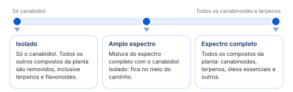

Os três tipos de óleo e as outras formas de levar os fitocanabinoides ao paciente: creme, spray nasal de resgate e óvulos.
Organizada a partir dos slides da aula, sem transcrição: não há falas da professora nem recados desta aula. As ligações com as aulas anteriores vêm das apostilas delas. A legenda de cores está na página 2.
A aula mostra os produtos feitos a partir da planta e as vias pelas quais cada um chega ao paciente. O óleo é a base: dele saem as escolhas de composição. As outras formas mudam o lugar de aplicação e a velocidade do efeito.
Espectro completo, amplo espectro e isolado. A diferença é quanto da planta vai junto com o canabidiol.
Uso na pele, para dor localizada, inflamação articular e problemas de pele.
Válvula que se encaixa no frasco de óleo. Pelo nariz, o efeito aparece em minutos.
Inseridos com aplicador no canal vaginal ou anal. Pedem cuidado com a temperatura.
No fim da aula sobre o sistema endocanabinoide, a professora avisou que traria os produtos para a turma ver (óleos com tetra-hidrocanabinol, óleos com canabidiol e pomadas) e explicaria a conta das gotas na prescrição. As fotos dos slides são do portfólio da Santa Gaia.
O rótulo do óleo diz quanto da planta foi mantido. Num extremo fica o produto com tudo o que a planta produz; no outro, só o canabidiol purificado. O slide mostra isso como um marcador que vai de “só canabidiol” até “todos os canabinoides e terpenos”.

Na primeira aula, a professora explicou o efeito comitiva (em inglês, entourage): canabinoides, terpenos e flavonoides funcionam melhor juntos, um melhorando o efeito do outro. Esse efeito depende de haver vários compostos no mesmo produto, o que não acontece no isolado. Na mesma aula, o amplo espectro foi descrito como vários compostos sem o tetra-hidrocanabinol.
Na prática, o espectro completo é o único dos três que costuma levar tetra-hidrocanabinol, ainda que em pequena quantidade. Por isso, a concentração desse componente no rótulo pesa no tipo de receita, como visto na aula de regulamentação.
O creme leva os fitocanabinoides direto ao local da queixa. As indicações do slide se dividem em três grupos: dor, pele e sintomas gerais.
Pela pele íntegra, pouco do produto chega ao sangue, e a ação tende a ser local. É por isso que o creme aparece mais para dor localizada e doenças de pele do que como tratamento de doenças do corpo todo.
É um spray para usar o óleo de cannabis pelo nariz. Não é um produto à parte: é uma válvula que se encaixa no frasco e serve para qualquer um dos tipos de óleo. Assim, o tratamento fica personalizado para cada situação, com a composição que o paciente já usa.
Uma borrifada em cada narina, conforme a orientação do profissional de saúde.
Pelo nariz, a absorção é mais rápida do que pela via sublingual ou pela boca, e o efeito pode aparecer em poucos minutos. Isso faz do spray uma opção para o momento em que o sintoma aparece, em vez da dose diária de manutenção.
O spray de resgate desta aula é nasal e montado sobre o óleo. O Mevatyl, citado na Aula 1, é outro produto: um medicamento registrado, em spray para a mucosa da boca, com tetra-hidrocanabinol e canabidiol, indicado para a rigidez muscular da esclerose múltipla.
A equivalência do slide permite fazer a conta da dose: se 4 gotas são 0,2 mL, cada gota tem cerca de 0,05 mL. Num óleo com 50 mg de canabidiol por mL, uma aplicação de 0,2 mL leva cerca de 10 mg. Sempre conferir a concentração no rótulo, que muda de produto para produto.
Os óvulos de canabidiol são inseridos diretamente no canal vaginal ou anal, conforme a necessidade e a orientação médica. O aplicador garante que o óvulo fique na posição certa, para o produto render o máximo. A frequência de uso segue à risca o que o profissional de saúde recomendar.
Na embalagem original, em lugar fresco, seco e protegido da luz direta.
Guardar bem é o que preserva a integridade e a eficácia do produto.
Óvulos e supositórios são feitos para derreter na temperatura do corpo. Acima da faixa recomendada, amolecem e perdem a forma ainda na embalagem, o que explica o cuidado com o calor.